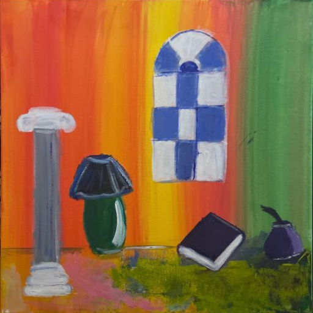

Hand-painted

This painting is a potted plant on a desk that contains purple and blue flowers. It shows the beauty of simplicity.
This painting is a plam tree on a moonlit seaside. It shows the beauty of nature and serenity.
This painting is a lady with no face whose skin is split between a white and beige color. It shows how the face doesn't define the beauty or identity of a person.
This paininting is a multi-colored space which contains a book and ink. It doesn't have a definite meaning but I believe it shows the wild imagination of a writer personafied in a room.

This painting is a bouquet of flowers on an orange background. It shows that they can be beauty even in that which is irregular.
This painting is a forest of bamboo. It shows that even that which looks bland can have beauty, it is aswell inpired by traditional East-Asian art.